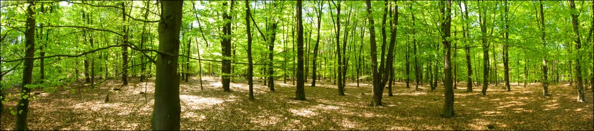

|
|
HTLM:
HTML (HyperText Markup Language) este un limbaj utilizat
pentru crearea paginilor web ce pot fi afisate intr-un browser.
CSS:
CSS se ocupa in general cu aspectul si controlul grafic al
elementelor din pagina, cum ar fi: textul, imaginile, culorile si
asezarea acestora in cadrul ferestrei paginii.
PHP:
PHP este una dintre cele mai interesante tehnologii pentru site-
uri si programare web, imbina caracteristici dintre cele mai
complexe cu simplitatea in utilizare.
MySQL:
Bazele de date relationale inteleg SQL (Structured Query
Language), un limbaj relativ simplu, folosit pentru solicitarea
datelor.